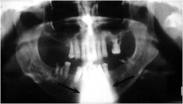

Procedure:
- When the patient is not positioned upright in the machine and they are slumped with their neck stretched forward on a slant the result is a prominent ghost image of the cervical spine.
- This ghost image is superimposed over the anterior maxilla and mandible.
- This error can interfere with visualization of the anterior teeth, particularly the mandibular anterior teeth.
- Please refer to the image below for an example of a patient that was slumped while the image was acquired.

|